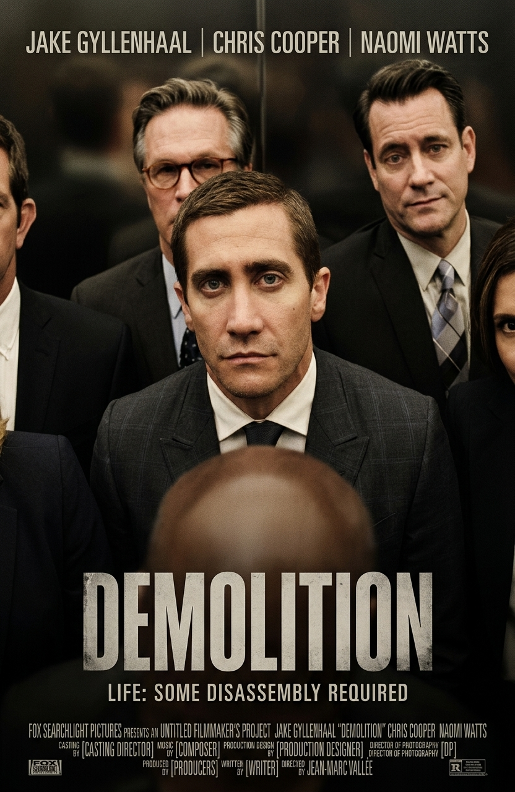

DEMOLITION

Reseña
Sinopsis
Expone cómo el duelo quiebra a cada persona de forma distinta, reflejándose en el protagonista a través de una disociación y desconexión emocional absoluta. Su obsesión por desarmar objetos y escribir cartas catárticas funciona como una metáfora visceral de su propia vida. Necesita destruir todo desde los cimientos para comprender cómo está hecho por dentro y descubrir si es capaz de reconstruirse.